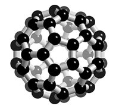
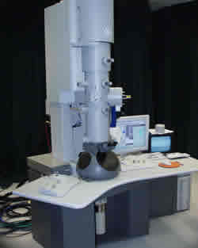

History
Major advances in nanotechnology since 1959:
1959- American physicist Richard P. Feynman gives a speech at the American Physical Society, and is credited with originating the concept of nanotechnology
1974-Japanese scientist Norio Taniguchi is the first to use the term ‘nanotechnology’ in his paper, “On the Basic Concept of Nanotechnology”
1981-Kim Eric Drexler, a genetic engineering student at MIT, popularizes the theory of nanotechnology
1985- Richard Errett Smalley makes the first major development in nanotechnology by finding a way to produce carbon in a third form (besides graphite and diamond). Smalley called this synthetic carbon molecule buckyball, or fullerene
2000- US President Bill Clinton creates the National Nanotechnology Initiative (NNI) in order to further research in nanotechnology

The buckyball molecule was named after the American architect Buckminster Fuller, who had built a similar looking geodesic dome.
Tools Used in Nanotech
 Transmission Electron Microscope(TEM)The TEM can magnify an object up to 30 million times, making it ideal for use with nanoparticles. This microscope uses an electron beam to form a magnified image of the object that is then recorded on a screen. The electrons from the beam will either be absorbed, bounce off or pass through the object, allowing an accurate image to be produced. (See image at right)
Atomic Force Microscope (AFM)The AFM is uses a silicon tip as a probe to record the properties of the surface of an object. The tip moves along the surface of the object with constant pressure (adjusting itself when needed), and a different machine records the movement of the probe to form a picture of the object's surface. The electrons on the probe and the surface of the object repel each other, allowing this method to work.
Scanning Tunneling Microscope (STM)The STM, like the AFM, also uses a probe to map out the surface of an object. However, the STM uses a different property of electrons, tunneling; tunneling allows electrons from the probe to "tunnel" into the surface of the object. From there, the electrons emit electric currents that are recorded and analyzed to create a topographical picture of the object.